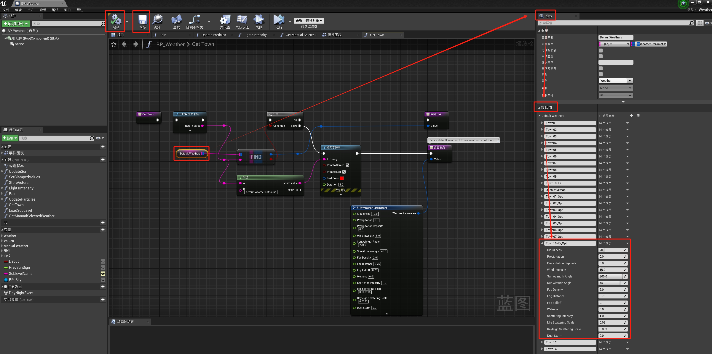
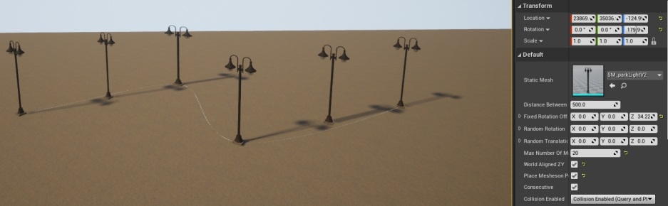
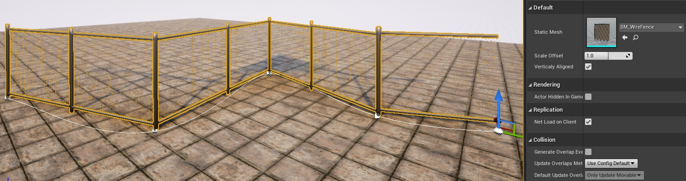

自定义地图：天气和景观¶
Carla 提供了多个蓝图，可帮助您轻松创建地图的默认天气设置，并使用序列化网格（例如路灯、电线等）填充景观。
本指南将解释每个蓝图的位置以及如何使用和配置它们。
!!! 重要 本教程仅适用于使用源代码构建并有权访问虚幻编辑器的用户。
天气定制 ¶
本节介绍如何在设置地图的默认天气之前尝试不同的天气参数，以及在对设置感到满意后如何为地图配置默认天气参数。
天空蓝图 BP_Sky ¶
蓝图BP_Sky 对于为地图带来光线和天气是必要的。在决定默认天气参数之前，它还可以用于测试不同的天气配置。
BP_Sky 蓝图可能已经加载到您的地图中。如果没有，您可以通过Content/Carla/Blueprints/Weather将其拖到场景中来添加它。
要尝试不同的天气参数，请转到 BP_Sky 参与者的 细节(Details) 面板，然后使用 参数(Parameters) 部分中的值。
!!! 重要
如果场景中加载了多个 BP_Sky 蓝图，天气将会重复，从而产生不良结果，例如，有两个太阳。
天气蓝图 BP_Weather ¶
地图的默认天气在天气蓝图BP_Weather中定义。此蓝图允许设置的参数和 Python API 相同。此处 描述了这些参数。
要设置地图的默认天气：
1. 打开 BP_Weather 蓝图。
在 内容浏览器 中，导航至 Content/Carla/Blueprints/Weather 并双击 BP_Weather 。
2. 添加您的城镇。
在BP_Weather窗口中间选中 Default Weathers，在 细节(Details) 面板中，转到 Default Weathers 部分并将您的城镇添加到数组中。
3. 配置默认天气参数。
对于每个天气参数，设置您想要的值。完成后，按 编译(Compile) ，然后按 保存(Save) 并关闭。

天气的具体实现请参考 链接 。
添加序列化网格 ¶
有四种蓝图可用于添加沿一个方向对齐的道具，例如墙壁、电线、路灯。这些蓝图使用一系列沿贝塞尔曲线分布的网格。每一个都以相同的方式初始化：
1. 初始化序列。
将蓝图拖到场景中。您将看到一个元素位于贝塞尔曲线的起点，并有两个节点标记开始和结束。
2. 定义路径。
选择元素的方向箭头，然后按 Alt 键，同时将元素向您想要移动的方向拖动。这将创建一个可用于定义曲线的新元素。拖动时，曲线的每个节点上或每次Alt拖动时按下时都会出现一个新网格，具体取决于蓝图。
3. 定制图案。
以下部分将描述每个蓝图可用的不同自定义参数。
BP_RepSpline ¶
蓝图BP_RepSpline可在 Carla/Blueprints/LevelDesign 中找到。它用于沿着贝塞尔曲线定义的路径添加 单个 元素。
序列化是通过以下值自定义的：
- Distance between — 设置元素之间的距离。
- Offset rotation — 为不同轴设置固定旋转。
- Random rotation — 设置不同轴的随机旋转范围。
- Offset translation — 设置沿不同轴的一系列随机位置。
- Max Number of Meshes — 设置将放置在曲线节点之间的元素的最大数量。
- World aligned ZY — 如果选择此选项，元素将相对于世界轴垂直对齐。
- EndPoint — 如果选择此选项，将在曲线的终点节点添加一个元素。
- Collision enabled — 设置为网格启用的碰撞类型。

BP_Spline ¶
蓝图BP_Spline可在 Carla/Blueprints/LevelDesign 中找到。它添加严格遵循贝塞尔曲线定义的路径的连接元素。网格将扭曲以适应创建的路径。
可以使用以下值自定义蓝图：
- Gap distance — 在元素之间添加间隔。

BP_Wall ¶
蓝图BP_Wall可在 Carla/Blueprints/LevelDesign 中找到。它沿着贝塞尔曲线定义的路径添加连接的元素。网格不会扭曲以适应曲线，但会考虑节点。
- Distance between — 设置元素之间的距离。
- Vertically aligned — 如果选择此选项，元素将相对于世界轴垂直对齐。
- Scale offset — 缩放网格的长度以完善元素之间的连接。

BP_SplinePoweLine ¶
BP_SplinePoweLine 蓝图可在 Carla/Static/Pole/PoweLine 中找到。它沿着贝塞尔曲线定义的路径添加 电线杆(electricity poles)，并将它们 与电线连接起来。
为了提供多样性，您可以为蓝图提供一系列电力线网格来填充路径。去做这个：
- 在 Content Browser 中双击 BP_SplinePoweLine 蓝图。
- 在 Details 面板中，转到 Default 部分。
- 展开 Array Meshes 并根据您的需要添加或更改它。
- 点击 Compile ，然后保存并关闭窗口。

要改变电源线的线张力：
- 在编辑器场景中选择蓝图参与者，然后转到 Details 面板。
- 转到 Default 部分。
- 调整张力 Tension 中的值。
0表示线条将是直的。
增加电线数量：
- 在 内容浏览器 中，双击其中一个杆网格。
- 转到 Socket Manager 面板。
- 配置现有套接字或通过单击 Create Socket 添加新套接字。插座是代表电源线连接点的空网格。在两极之间从插座到插座创建电线。

!!! 重要 各极之间的插座数量及名称应一致。否则，可能会出现可视化问题。
下一步 ¶
使用以下工具和指南继续自定义您的地图：
完成定制后，您可以 生成行人导航信息 。
如果您对流程有任何疑问，可以在 论坛 中提问。